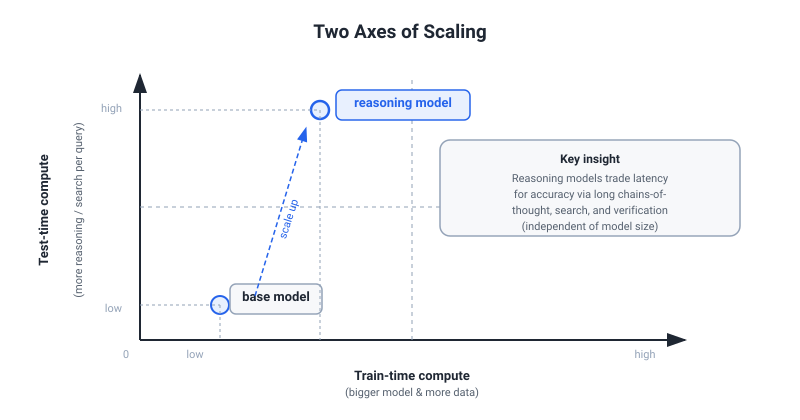

SOTA 2026 — Current Awareness & Advanced Architectures
Interview-ready briefing for Tony Yang, eBay ML Engineer Stage-1 (Hiring Manager: Yannick Versley). Accurate to June 2026. Synthesized from _sota_checklist_2026.md + findings.md. For generative-model SOTA (flow matching, SD3, FLUX) see doc 13; for compression/serving depth see doc 16; for classical NLP/comp-ling depth see doc 14.
1. Frontier Model Landscape (June 2026)
Capsule summaries
GPT-5.x (OpenAI): GPT-5.5 Pro leads FrontierMath Tier 4 (~39.6%); "deep research" / extended thinking enabled by default; ~1M context. Competes on inference-time compute scaling, not just parameter count.
Claude Opus 4.8 (Anthropic): Tops the Artificial Analysis Intelligence Index (~61.4, May 2026); strongest on long-context coherence and coding; extended thinking; 1M context; emphasizes safety + reliable instruction-following.
Gemini 3.x (Google): 3.1 Pro + Flash variants; natively multimodal from pretraining (not bolt-on); leads video understanding benchmarks; Flash sets the price-per-useful-output frontier.
Llama 4 — Scout + Maverick (Meta, Apr 2025): Open weights; MoE architecture; native multimodal; self-hostable, which makes it the go-to base for domain fine-tunes (e.g., eBay e-commerce adaptation without license exposure — mirrors the LiLiuM motivation).
DeepSeek V3 / R1 / V4 (DeepSeek): 671B total / ~37B active MoE; introduces MLA KV compression (see §3); aux-loss-free load balancing; Multi-Token Prediction head; trained on ~14.8T tokens. R1 is the open reasoning model (see §2). Represents the "efficiency-first" frontier design philosophy.
Qwen3 / Qwen3-Next (Alibaba): Hybrid gated attention combining DeltaNet linear attention with standard attention for long-context throughput efficiency; strong multilingual coverage.
Grok 4.x (xAI) / Kimi K2.6 (Moonshot): Competitive on reasoning and coding at lower inference cost; useful reference points for "what's at the efficiency frontier."
Who Leads at What (June 2026)
| Dimension | Leader(s) | Runner-up |
|---|---|---|
| General intelligence / reasoning | Claude Opus 4.8 | GPT-5.5 Pro |
| Hard math (FrontierMath) | GPT-5.5 Pro | Claude Opus 4.8 |
| Video / multimodal | Gemini 3.1 Pro | GPT-5 |
| Price-per-token efficiency | Gemini Flash / Kimi K2.6 | DeepSeek V3 |
| Open weights | Llama 4 / DeepSeek V3+R1 | Qwen3 |
| Domain adaptation base | Llama 4 / DeepSeek V3 | Qwen3 |
| Reasoning (open) | DeepSeek-R1 | Qwen3-Next |
What to say: "The frontier has bifurcated into two tracks: inference-time-compute scaling (o3/GPT-5.5/Opus 4.8 — you pay more at inference to think longer) and efficiency-first design (DeepSeek V3, Gemini Flash — architectural tricks reduce parameter activation and KV footprint). For eBay production, the efficiency track matters as much as the accuracy track."
Likely follow-up: "Which would you use for a production e-commerce task like listing generation?" — Answer: probably a Flash-tier model or a domain-fine-tuned open model (like LiLiuM / e-Llama tier) for routine tasks; frontier model for complex reasoning steps; router policy to decide (↔ Tony's LLM Router work).
2. Reasoning & Test-Time Compute

The core idea
Test-time compute is a new, independent scaling axis: given fixed model weights, you can scale how long the model thinks at inference and get monotonically better accuracy. This is orthogonal to parameter count (the old axis). Demonstrated by o1→o3: accuracy on competition math rises with extended compute budget, not with a bigger model.
Key systems and techniques
o1 / o3 / o3-pro (OpenAI): RL-trained on chain-of-thought traces; the model learns to self-correct mid-generation; accuracy scales with inference budget (new scaling axis ⊥ model size). o3-pro on ARC-AGI-2 was the first system to cross meaningful threshold.
DeepSeek-R1 (Jan 2025): Open reasoning model trained with GRPO (Group Relative Policy Optimization): sample K completions per prompt, compute reward within-group (no absolute baseline, no critic network), use within-group normalized advantages as training signal. Halves memory vs PPO while achieving competitive math/coding reasoning. Key paper: arXiv 2501.12948.
DAPO (Decoupled Clip + Dynamic Sampling): Extension of GRPO; decouples the clip ratio for positive/negative samples and applies dynamic sampling to avoid reward-hacking instability on long-horizon tasks; more stable than GRPO on complex agent rollouts.
RLVR (RL from Verifiable Rewards): Uses ground-truth verifiable signals (unit test pass/fail, math answer match, JSON schema validity) as reward. Cheap to compute, noise-free, no human annotation. Limitation: only works for checkable tasks (not open-ended generation quality). The cleanest application of RLVR is coding + math.
PRM vs ORM: - ORM (Outcome Reward Model): reward at final answer only; sparse signal; can reward lucky wrong paths. - PRM (Process Reward Model): reward at each reasoning step; denser credit assignment; better long-chain performance; requires step-level annotation (expensive) or self-generated step labels. - GRM / SPCT (DeepSeek): generalized reward model designed to be test-time scalable — reward quality itself improves with more compute, enabling search-based decoding (best-of-N with a strong process reward signal).
What to say
"Inference-time scaling is the key post-GPT-4 insight. o3 showed that with RL-trained CoT plus extended inference budget, you can beat larger models at lower training cost. For eBay, this is directly relevant: a smaller, cheaper model doing extended reasoning on a complex listing or search query may beat a large model doing greedy decode, and the cost-accuracy tradeoff is controllable at inference time — which maps exactly onto routing strategies."
Likely follow-up: "How does GRPO differ from PPO?" — Answer: GRPO removes the critic entirely. Advantage is estimated within a group of K samples for the same prompt (relative ranking), not from a learned value function. Half the memory, no critic training instability, but requires sampling diversity to work (degrades if K outputs are too similar).
3. Advanced Architectures
MoE at Scale
Mechanism: Mixture-of-Experts replaces dense FFN layers with N expert FFNs; a learned router gates each token to top-k experts. Total parameter count (capacity) is large but active parameters per token (and thus FLOPs) stay fixed at top-k experts. DeepSeek V3: 671B total / ~37B active per token.
Load balancing: Naive top-k routing causes expert collapse (popular experts get all traffic, others undertrained). Solutions: (a) auxiliary load-balancing loss (penalize uneven routing probability mass); (b) aux-loss-free load balancing (DeepSeek V3) — uses a running expert load estimate to bias router logits without adding a separate loss term, avoiding the training instability that auxiliary losses can introduce.
Expert collapse: A failure mode where the router monotonically prefers a small subset of experts. Symptoms: training loss flattens, effective capacity collapses to dense-model size. Mitigations: router z-loss, jitter noise, capacity constraints.
What to say: "MoE is now the default architecture for frontier-scale models. The key engineering challenge is load balancing without harming training stability. DeepSeek V3's aux-loss-free approach is notable because it sidesteps the loss-weighting hyperparameter problem entirely."
Likely follow-up: "What's the serving challenge with MoE?" — Expert routing requires conditional VRAM: ideally each expert shard lives on a separate device. At inference with batch=1 you're activating a tiny fraction of total params, so compute utilization drops. Solutions: expert parallelism, speculative expert caching, expert co-location heuristics.
MLA vs GQA vs MQA (KV Compression)
MHA (baseline): Every attention head has its own K and V matrices. KV cache scales as O(layers × heads × seq_len × head_dim). At 128K+ context this dominates memory.
MQA (Multi-Query Attention): All query heads share a single K, V pair. Reduces KV cache to 1/H of MHA. Aggressive; some quality loss.
GQA (Grouped-Query Attention): G groups of query heads share one K/V pair per group. Trade-off between MHA quality and MQA efficiency. Default in Llama 3+, Mistral. At G=H it's MHA; at G=1 it's MQA.
MLA (Multi-head Latent Attention, DeepSeek V3): Joint low-rank decomposition of K and V into a shared latent vector: instead of caching K and V separately, cache only the compressed latent (much smaller), and reconstruct K, V from it at decode time. Achieves ~5–13× KV cache reduction vs MHA with minimal quality loss, because the low-rank structure captures the joint K/V correlation. Key paper: arXiv 2412.19437 (DeepSeek V3 tech report).
What to say: "MLA is the most aggressive KV compression currently in a frontier model. The key insight is that K and V are jointly compressed — you cache a small latent, not the full tensors. At eBay's scale, even a 5× KV reduction meaningfully changes what fits on a serving node."
Hybrid Mamba-Transformer
Mechanism: Mamba is an SSM (State Space Model) with selective input-dependent state updates; O(sequence_length) training (vs O(L²) for attention) and O(1) per decode step (vs O(L) KV cache growth). Jamba (AI21) and Nemotron (NVIDIA) alternate Mamba-2 layers with full attention layers in a single stack, combining SSM's long-range memory efficiency with attention's in-context retrieval precision.
Why SSMs are not frontier-dominant: SSMs compress sequence history into a fixed-size recurrent state. This is efficient but lossy — they can "forget" tokens that attention would hard-retrieve. Benchmarks show hybrid wins over pure SSM on tasks requiring precise token retrieval (QA, function calls, exact quote reproduction) while retaining SSM's context-length efficiency. Pure attention with ring attention + GQA is still the frontier standard because retrieval fidelity matters most for instruction following.
Practical upside: Hybrid Mamba stacks can handle 256K+ context on a single GPU that would OOM a full attention model, making them viable for on-device or budget serving scenarios.
Long-Context Techniques
RoPE extrapolation: Standard RoPE position encodings degrade on sequences longer than the training length. YaRN (Yet another RoPE extensioN) and LongRoPE extend the effective position range by rescaling RoPE frequencies, enabling 1M+ context with minimal fine-tuning. Now standard in frontier models.
Sliding-window attention: Restricts each token's attention to a local window + sparse global tokens; O(L) attention cost. Used in Mistral, Mixtral. Loses full-sequence access but is sufficient for many practical tasks.
Ring Attention: Distributes long sequences across multiple GPUs in a ring topology; each device holds a shard of the sequence and passes KV blocks around the ring. Enables training/inference on sequences too long for single-device HBM. Used for frontier 1M context training.
1M context is now standard at the frontier; the practical challenge is retrieval quality across the full window (lost-in-the-middle degradation) and cost (attention scales O(L²)).
Byte Latent Transformer (BLT, Meta, Dec 2024)
Mechanism: Removes the fixed tokenizer entirely. Instead, uses entropy-based dynamic patching: segments byte streams into variable-length patches based on local byte predictability (high-entropy regions get finer granularity, low-entropy regions get coarser patches). A small local encoder maps byte patches to patch embeddings; a large global transformer processes the patch sequence; a local decoder maps back to bytes.
Key benefit: Tokenizer-free → no vocabulary fixed at training time, no OOV problem, language-agnostic segmentation, robust to typos and novel domains. Inference efficiency because model processes fewer patches than bytes on average.
Status: Research preview; not yet in production frontier models. Worth knowing as the direction beyond BPE/Unigram if e-commerce UGC strings (product titles, multilingual text) make fixed-vocab tokenization costly.
4. Post-Training Trends
Alignment without PPO
DPO (Direct Preference Optimization): Closed-form re-parameterization of RLHF that eliminates the reward model and RL loop; trains directly on (chosen, rejected) pairs with a classification-style loss. Simple but relies on a reference model and can be sensitive to pair quality.
IPO: Fixes DPO's tendency to overfit preferred responses by adding an identity-preserving regularization term.
KTO (Kahneman-Tversky Optimization): Does not require pairs — just per-example (prompt, response, desirability) labels. Uses a prospect-theory-inspired loss. Works when pairwise comparisons are unavailable (e.g., log data with binary signals only). Relevant for eBay click/purchase signal-based alignment.
SimPO: Length-normalized, reference-free preference optimization. Removes the need for a reference model entirely; uses average log-probability divided by length as reward signal. Reduces serving complexity (no reference model call at training time).
GRPO / DAPO: See §2. Relevant in post-training as the alternative to PPO for RL-based fine-tuning of reasoning.
Synthetic Data + Self-Play
Frontier models generate their own training data (distillation from a stronger teacher, self-generated CoT traces, RLVR closed loops). Phi-series (Microsoft) showed that textbook-quality synthetic data for pretraining allows a 3.8B model to match much larger models on reasoning benchmarks. Self-play: model generates its own problems, attempts solutions, uses verifiable reward to filter and train on successes — fully automated curriculum.
For eBay: Synthetic data is the practical path to scaling labeled e-commerce NLP data (attribute extraction, listing quality, multi-image captioning) without proportional human annotation cost.
Multi-Stage Pretraining + Data Mixes
Modern pretraining is multi-phase: (1) web-scale pretraining on large noisy corpora; (2) mid-training on high-quality curated data (code, math, science, multilingual) — often called "quality uplift"; (3) annealing on the best data with a cosine LR decay to near-zero; (4) SFT / alignment.
Llama 3 mix (reference): ~50% general web / 25% math-reasoning / 17% code / 8% multilingual. Data curation matters more than raw token count: quality filtering (perplexity-based, classifier-based) + deduplication (MinHash) before mixing.
e-Llama (eBay, arXiv:2501.09706): Continued pretraining of Llama 3.1 8B + 70B on 1T tokens e-commerce; LR max = 10% of original pretrain LR (8B: 3.0e-5, from 3.0e-4; 70B: 1.5e-5 from 1.5e-4); data mixture = 50% e-commerce / 50% general (10% of general is non-English). Results: ~25% improvement on English e-commerce benchmarks, ~30% non-English; some general-domain degradation (more pronounced on 8B, NLU mostly preserved). This is an eBay team preprint (NOT Versley's paper directly — he leads the org; safe to say "your team's work").
What to say: "The data mix for continued pretraining is a non-trivial optimization problem. Too much domain data → catastrophic forgetting; too little → insufficient specialization. e-Llama's 50/50 split with a small LR relative to original pretraining is a sensible conservative calibration. The observation that 8B degrades more than 70B suggests capacity is a factor in forgetting resistance."
Likely follow-up: "How would you set the LR for continued pretraining?" — Answer: Start at ≤10% of original pretrain LR to avoid catastrophic forgetting; use a short warmup (1–2% of total steps); monitor both domain task evals AND held-out general benchmarks in parallel throughout training.
5. Inference Efficiency SOTA
Speculative Decoding
A draft model (small, fast) proposes K tokens; the target model (large, accurate) verifies all K in a single forward pass (parallel, not sequential). If the draft's token matches what the target would have produced, it is accepted at zero cost; on mismatch, the target's distribution is used and drafting restarts. Output distribution is provably identical to the target alone. Throughput gain: 2–5× depending on acceptance rate. Key lever: acceptance rate — higher when draft and target are well-aligned in distribution (same family, similar domain).
QuantSpec: Combines speculative decoding with quantized draft models (INT4/INT8 draft, FP16/BF16 target) — draft is cheaper AND faster, improving the cost-per-accepted-token. Key: quantization gap must not harm acceptance rate excessively. Source: arXiv 2502.10424.
Depth → doc 16.
KV Cache Quantization
KV cache can be quantized independently of weight quantization. INT8: ~2× memory reduction; INT4: ~4×; TurboQuant achieves ~3-bit with ~6× reduction and near-zero quality loss by using calibrated scale/zero-point per head. KVTuner (arXiv:2502.04420) uses per-layer mixed precision — sensitive layers keep INT8, less sensitive layers drop to INT4/INT3 — choosing the mix via a fast sensitivity analysis pass. Highly practical for long-context serving where KV cache, not weights, is the memory bottleneck.
Depth → doc 16.
FlashAttention-3
IO-aware attention: tiles Q, K, V and streams them through SRAM without ever materializing the full N×N attention matrix in HBM. FlashAttention-3 (H100-optimized) uses asynchronous memory transfers, warp specialization, and FP8 arithmetic where possible. 2–4× faster than FA2 on H100. Now the standard attention kernel in all serious training/inference stacks.
Depth → doc 16.
vLLM PagedAttention + Continuous Batching + Disaggregated Prefill/Decode
PagedAttention: KV cache stored in non-contiguous physical memory blocks (like OS virtual memory paging); allows fine-grained KV sharing across requests (e.g., system prompt sharing). Eliminates KV cache fragmentation — 3–5× more concurrent requests on same hardware.
Continuous batching: Rather than waiting for a full batch to complete (static batching), new requests join the batch as slots free up. Dramatically improves GPU utilization for variable-length workloads (e.g., eBay's variable-length product listings).
Disaggregated prefill/decode: Prefill (processing the input prompt — compute-bound) and decode (autoregressive token generation — memory-bandwidth-bound) have opposite resource profiles. Disaggregation routes prefill to compute-optimized nodes and decode to bandwidth-optimized nodes, improving utilization of both. Emerging practice at large-scale LLM serving.
FP8 Training and Inference
H100 GPUs natively support FP8 (E4M3/E5M2 formats). Combined with FlashAttention-3 and speculative decoding, FP8 inference achieves 5–8× cost efficiency vs naive FP16 baseline. FP8 training requires careful loss scaling and is now standard at frontier labs. For eBay, FP8 inference on H100s is the cost-reduction lever for running larger models at viable serving cost.
6. Agentic SOTA
SDK Landscape (June 2026)
| SDK | Creator | Notes |
|---|---|---|
| OpenAI Agents SDK | OpenAI | Tool use, computer use, handoffs |
| Google ADK | Multi-agent, Gemini-native | |
| Semantic Kernel + AutoGen | Microsoft (merged Oct 2025) | Enterprise, plugin-based |
| smolagents | HuggingFace | Minimal, code-first, open |
| LangGraph | LangChain | Graph-based state machines |
| CrewAI | CrewAI | Role-based agent crews |
| Claude Agent SDK (Anthropic) | Anthropic | Tool use, computer use |
All converge on tool-use primitives (function calling with structured args), memory (short/long-term context management), and orchestration (single-agent loops vs multi-agent delegation).
Computer-Use
Models can now interact with GUIs directly: screenshot → action → observe → repeat. Claude 3.5 Sonnet computer-use (Oct 2024) and GPT-4o computer-use demonstrated this. Reliability on real-world tasks (web browsing, form filling) is still limited by: element localization errors, stochastic UI states, auth/captcha barriers.
SWE-bench Trajectory
SWE-bench solve rate: ~5% in 2023 → 50%+ in mid-2026 for top agents on the verified subset. The jump came from: (1) better code-editing tool interfaces (structured diffs, file trees); (2) longer context enabling multi-file reasoning; (3) better tool-use reliability.
Reliability is the bottleneck: Success on SWE-bench individual tasks doesn't translate to long-horizon software projects. Failure modes: incorrect tool argument formatting, incomplete file writes, partial error recovery, incorrect state tracking across many steps.
Multi-Agent Evaluation as Open Problem
Tony's TwinRouterBench (Commonstack preprint, arXiv:2605.18859; Tony is 3rd of 17 authors) addresses a related gap from the routing angle: it scores LLM routing per agent step rather than per one-shot query, since a cheap call at step i can silently break step i+5. It has two tracks — a static track of 970 execution-verified, router-visible step-level prefixes across five workloads (SWE-bench, BFCL, mtRAG, QMSum, PinchBench), scored by deterministic arithmetic (RowPass/RowExact/TrajPass/CostSave) with no online judge; and a live dynamic track that runs routers end-to-end on SWE-bench Verified with real OpenRouter pricing (bill = API cost + $0.60 per unresolved instance). Current single-shot router benchmarks miss exactly this step-level conditioning. (Full verified detail in 20_OWN_PAPERS_GROUND_TRUTH.md.)
Open problems: task decomposition fidelity, shared state consistency across agents, failure attribution in multi-agent pipelines, partial-success scoring (binary pass/fail misses partial credit).
What to say: "SWE-bench numbers look impressive but they measure a narrow task: apply a patch to a known repo given the issue text. Real agentic work fires many model calls per request, where a cheap or wrong model choice at one step can silently break a later one — which is what our TwinRouterBench measures, by scoring routing decisions per step rather than per query. The gap between SWE-bench performance and real-world agent reliability is where the interesting open problems live."
Likely follow-up: "How do you evaluate multi-agent systems?" — Answer: you need hierarchical eval — per-step tool success rate, intermediate checkpoint quality, final output correctness, plus failure attribution (did the planner misdecompose, or did an executor fail on a correctly-specified subtask?).
7. Multimodal / VLM SOTA
Native Multimodal vs Bolt-On Adapters
Bolt-on (adapter-based): A frozen or partially frozen LLM receives visual features from a separately trained vision encoder (ViT) via a learned adapter (linear projection or cross-attention). Efficient to train (only adapter is updated), but: visual capacity is limited by adapter size, LLM's text representations were not shaped to anticipate visual input, and the vision encoder may not cover the target domain.
Native multimodal (Gemini 3.x, GPT-5, Llama 4): Visual and text tokens are co-trained from pretraining. The model's representation space is jointly optimized for both modalities — shared capacity rather than separate frozen components. Significantly better on tasks requiring tight vision-language integration (visual reasoning, attribute reading, OCR-in-context).
Why this matters for e-commerce: Product listing understanding requires reading price tags in images, parsing attribute text overlaid on product photos, reasoning jointly across 5-10 images of the same item from different angles. Bolt-on adapters struggle; native multimodal or carefully fine-tuned VLMs are needed.
eBay VLM Paper — arXiv:2602.11733 (Versley co-author)
Full title: "Adapting Vision-Language Models for E-commerce Understanding at Scale."
Authors include: Yannick Versley, Cees G. M. Snoek (Univ. Amsterdam), and eBay Applied Research team (Nulli, Orshulevich, Bazazo, Herold, Kozielski, Mazur, Tuzel, Hashemi, Javed, Khadivi). arXiv preprint, 2026.
Core result: Fine-tuned Gemma3-4B achieves F1 = 50.5 on e-commerce attribute extraction; zero-shot Gemma3-27B achieves F1 = 44.8. A 4B model fine-tuned for the domain outperforms a 7× larger zero-shot model, at ~3.8× inference speedup.
Pipeline: Synthetic captions generated by InternVL-2.5-26B, verified by Mistral-Small-3-24B; new e-commerce VLM eval suite introduced.
Why e-commerce VLM is hard (three distinct challenges): 1. Multi-image reasoning: A single product listing has 5–10 images (front, back, label, detail, lifestyle); the model must aggregate evidence across images, not just caption each independently. 2. Structured attribute extraction: The output is not a caption but a structured dict of attributes (brand, color, size, material) — requires understanding category-specific taxonomies and eBay's attribute schema. 3. Noisy UGC text: Seller-generated titles and descriptions are short, abbreviation-heavy, grammatically loose; standard image-caption SFT data does not prepare a model for this distribution.
What to say: "Your VLM paper [2602.11733] makes a compelling efficiency argument: the right domain fine-tune of a small model beats a much larger zero-shot model. The hard part isn't just the fine-tuning — it's building the evaluation suite that captures the actual distribution (multi-image, attribute-centric, noisy UGC), which I see is a significant contribution of the paper. My own VLM work on the Human Intent World Model touched similar challenges: getting a VLM to reason over structured intent states from sparse visual cues required building evaluation beyond standard captioning metrics."
Likely follow-up: "What would you do next to improve this system?" — Answer: (a) multi-image attention pooling strategies rather than concatenation; (b) in-context learning with retrieved similar product examples; (c) RLVR loop using eBay's structured product catalog as ground truth for reward signal; (d) studying where the bolt-on vs native-multimodal gap appears in the attribute-level breakdown.
8. RAG / Retrieval SOTA + Long-Context vs RAG Tradeoff
Advanced RAG Stack (June 2026)
Dense retrieval: DPR (bi-encoder, dot-product similarity) and ColBERT (late-interaction token-level matching — more expensive but higher recall on lexical-specific queries). ColBERT retains per-token representations for the document, enabling fine-grained matching.
Sparse retrieval: BM25 — simple TF-IDF variant with saturation; fast; handles rare keywords well; fails on semantic paraphrase.
Hybrid: Dense + sparse retrieval with reciprocal rank fusion (RRF); consistently outperforms either alone across domains.
Reranking: Cross-encoder reranker (full attention over query + candidate) applied to top-K from retrieval; slow but accurate; standard in production RAG pipelines.
Query rewriting: Use LLM to rewrite/decompose the user query before retrieval; handles ambiguous or complex queries. HyDE (Hypothetical Document Embeddings): generate a hypothetical answer and retrieve documents similar to that answer.
Iterative / agentic retrieval: Multi-hop: retrieve → read → formulate sub-question → retrieve again; substantially better for multi-hop QA at the cost of latency.
Long-Context vs RAG Tradeoff
| Scenario | Better choice | Why |
|---|---|---|
| Moderate corpus (~100K tokens), tight cross-doc integration | Long-context LLM (stuff-it-all-in) | No retrieval errors, full context available, lower latency |
| Millions of documents, freshness critical | RAG | Long-context quadratic cost is prohibitive; retrieval is O(log N) |
| Verifiable citations needed | RAG | Retrieval returns source; long-context attribution is implicit |
| Sensitive data, no embedding leakage | Long-context (local) | No data leaves the model; embedding APIs expose data |
| Real-time inventory / pricing | RAG with live index | Model weights are static; retrieval index can be updated continuously |
For eBay: The product catalog is ~2B active listings (dynamic, constantly updated). This is a clear RAG scenario for grounded answers — no long-context model can hold the catalog in context. However, for understanding a single product listing (5–10 images + description + attributes, ~5–10K tokens), long-context with full attention is fine and avoids retrieval noise.
What to say: "The long-context vs RAG choice is a systems decision, not a pure ML one. At eBay scale — billions of live listings — you need RAG for catalog-grounded tasks. But for single-listing understanding tasks, long-context with all images and text in context is strictly better because retrieval errors compound."
9. "What Recent Work Are You Excited About and Why?" — Three Crisp Answers
These are opinionated, well-reasoned answers that tie to Tony's efficiency/routing research thesis and eBay's context. Pick the one that fits the conversation; have all three ready.
Answer A — KVTuner / MLA and the KV Cache as the New Memory Wall
"I'm excited about the shift in attention to the KV cache as the primary memory bottleneck. Work like MLA in DeepSeek V3 (arXiv:2412.19437) and KVTuner (arXiv:2502.04420) treats KV compression as a first-class architectural and systems problem, not an afterthought. MLA's joint low-rank K/V decomposition gets 5–13× cache reduction at minimal quality cost. KVTuner's per-layer mixed precision finds that different layers tolerate different quantization aggressively — so you don't need to be conservative everywhere.
This matters to me because my work on LLM routing and cost efficiency is essentially about the same problem from a different angle: how do you get the same capability at a fraction of the resource cost? KV compression is the serving-side version of the routing problem — instead of routing queries to cheaper models, you compress the KV representation of expensive models. The eBay serving context makes this directly applicable: at 1M+ QPS at peak traffic, a 5× KV reduction changes what model size you can afford to run."
Answer B — GRPO + RLVR as the Path to Self-Improving Domain Models
"I'm genuinely excited by the GRPO + RLVR combination (DeepSeek-R1, arXiv:2501.12948) because it changes how I think about domain adaptation. The conventional path is: collect human-labeled domain data → SFT → hope the model generalizes. GRPO + RLVR opens a different path: define a verifiable reward over domain tasks (e.g., 'does the generated product title satisfy eBay's attribute schema and length constraints?'), sample many responses, score them against the ground truth, and train on the relative ranking. No human-labeled preference pairs. The model improves from its own rollouts.
For eBay's LLM pretraining team, this is directly actionable: eBay has ground-truth structure (the catalog schema, the product knowledge graph) that can serve as a verifiable reward without any annotation. The combination of continued pretraining (as in e-Llama) with RLVR fine-tuning could close the last mile of e-commerce task performance. What I find intellectually interesting is that GRPO collapses the critic into a within-group relative estimate — it's a more elegant solution than PPO for tasks where you can generate many samples cheaply."
Answer C — Agentic System Evaluation as the Unsolved Infrastructure Problem
"The area I think is most underrated right now is evaluation infrastructure for agentic systems. SWE-bench showed the field can measure single-task patch generation, and the numbers look impressive — 50%+ in 2026. But project-level agentic work involves planning, state management across many files, tool error recovery, and multi-step decomposition fidelity. There's no widely accepted benchmark for that.
Our TwinRouterBench (Commonstack preprint, arXiv:2605.18859; I'm 3rd of 17 authors) attacks one slice of this for agentic LLM routing specifically — it scores routing decisions per agent step instead of per one-shot query, because in a long-horizon agent a cheap call at step i can silently break step i+5. The hard part is label construction: building execution-verified step-level labels cheaply via a greedy downgrade-and-cascade protocol over full-trajectory replay, plus a failure-aware cost metric so a router can't look good by routing cheap-and-failing. A static track scores 970 verified prefixes by deterministic arithmetic with no online judge; a live dynamic track validates the labels by running routers end-to-end on SWE-bench Verified with real pricing. I'm excited about this problem because the field's capability is running ahead of our ability to measure it, and without better evals, we can't tell which architectural choices actually matter for real-world agent reliability. For eBay's 'Magical Listing' agentic pipeline, this is not an academic question — it's the operational question of when you trust the agent to run without human review. (Full verified detail in 20_OWN_PAPERS_GROUND_TRUTH.md.)"
Sources
- arXiv:2412.19437 (DeepSeek V3 tech report: MoE, MLA, aux-loss-free LB)
- arXiv:2501.12948 (DeepSeek-R1: GRPO, open reasoning)
- arXiv:2406.12023 (LiLiuM: eBay in-house LLMs, 1B/7B/13B, 3T tokens, e-comm tokenizer)
- arXiv:2501.09706 (e-Llama: eBay continued pretraining of Llama 3.1, 8B+70B, 1T tokens)
- arXiv:2602.11733 (eBay VLM: Versley et al., Gemma3-4B fine-tuned F1=50.5 vs zero-shot 27B F1=44.8)
- arXiv:2502.10424 (QuantSpec: quantized draft speculative decoding)
- arXiv:2502.04420 (KVTuner: per-layer mixed-precision KV quantization)
- arXiv:2509.26124 (tokenizer domain extension: append-not-prepend BPE merges)
- Artificial Analysis Intelligence Index, May 2026
- Vellum / llm-stats leaderboards, June 2026
- Raschka LLM Research Review 2026